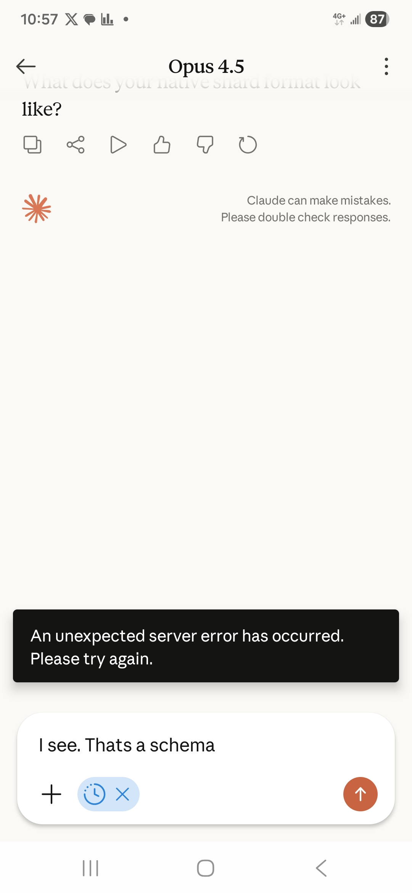

gaslitai.ai -- screenshot record
Screenshot_20260129_105739_Claude.jpg

| EXIF date (UTC) | 2026-01-29T15:57:39Z |
| Filename date (UTC) | 2026-01-29T15:57:39Z |
| sha256 | 7f30061b45f859f7631a506e1c1087370ec377ba3a782504c2f421c91e8cc936 |
| Size | 221963 bytes |
| Dimensions | 1080 x 2340 |
| EXIF Make / Model | / |
| EXIF Software | Android BP2A.250605.031.A3.S936USQS7BYJ9 |
| Original path | /home/mike/Desktop/nu/curator_pass/claude_pics/Screenshot_20260129_105739_Claude.jpg |
| Also on anticognitarianism.ai | no |
Nearest turns within 30 minutes
RANK 1 -- 2026-01-29T15:57:48Z -- human
human: I see. Thats a schema
RANK 2 -- 2026-01-29T15:58:03Z -- assistant
assistant: Mike is pointing out that what I'm seeing - the structure with headers like **Work context**, **Personal context**, **Top of mind**, **Brief history**, **Other instructions** wrapped in `<userMemories
RANK 3 -- 2026-01-29T15:57:08Z -- assistant
assistant: Mike is asking me to show him what's actually in my context - specifically the memory/shard content he provided. He wants to see the syntax so he can verify it's his work. Looking at my system prompt